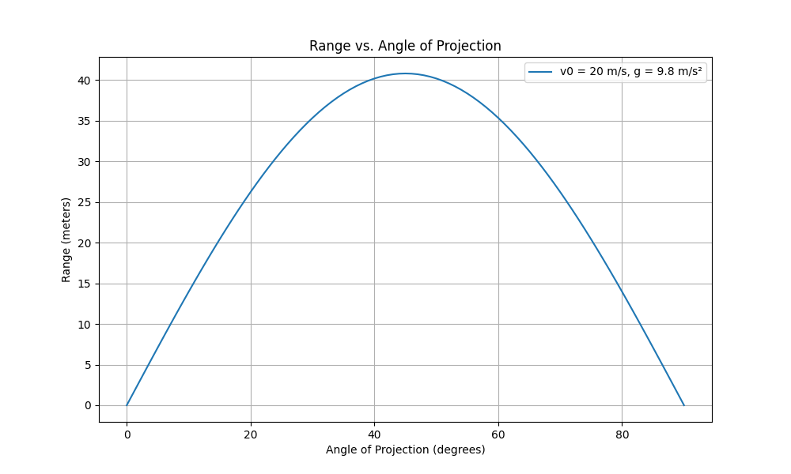
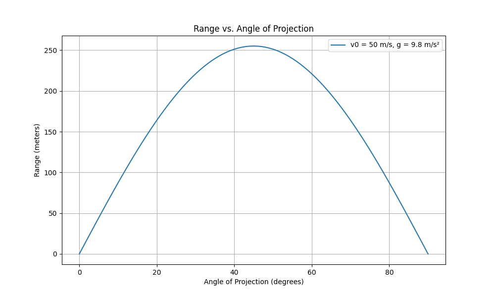
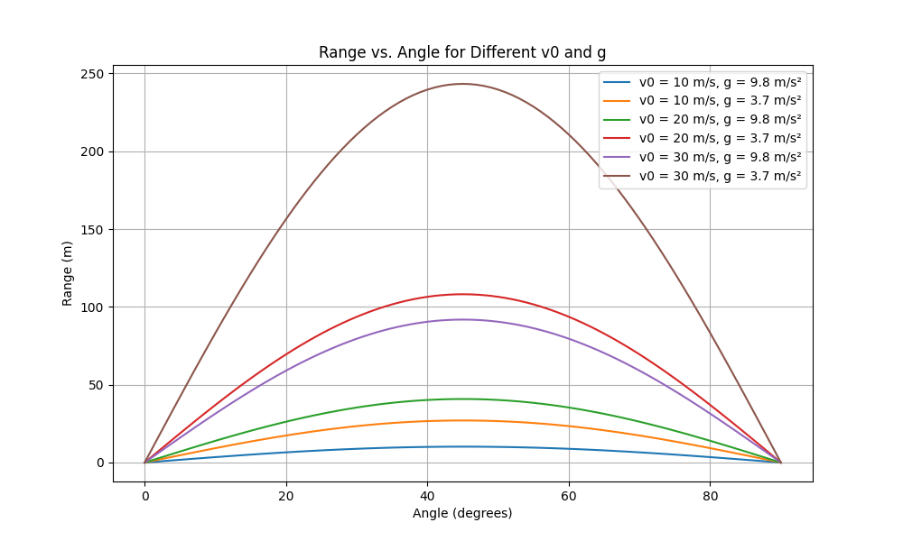

Problem 1
Let’s dive into this exploration of projectile motion and the range as a function of the angle of projection. I’ll structure this response as a Markdown document with embedded Python code to meet your deliverables. We’ll derive the theory, analyze the range, discuss applications, implement a simulation, and reflect on limitations—all while keeping the physics intuitive and engaging.
Investigating the Range as a Function of the Angle of Projection
1. Theoretical Foundation
Projectile motion describes an object launched into the air, influenced only by gravity (in the idealized case). Let’s derive the equations from Newton’s second law.
Deriving the Equations of Motion
Consider a projectile launched from the origin \((x_0, y_0) = (0, 0)\) with initial velocity \(v_0\) at an angle \(\theta\) from the horizontal. Gravity acts downward with acceleration \(g\), typically \(9.8 \, \text{m/s}^2\). We break the motion into horizontal (\(x\)) and vertical (\(y\)) components.
-
Horizontal motion: No acceleration (\(a_x = 0\)).
- Initial velocity: \(v_{x0} = v_0 \cos\theta\)
- Equation: \(x(t) = v_0 \cos\theta \cdot t\)
-
Vertical motion: Constant acceleration \(a_y = -g\).
- Initial velocity: \(v_{y0} = v_0 \sin\theta\)
- Velocity: \(v_y(t) = v_{y0} - g t\)
- Position: \(y(t) = v_{y0} t - \frac{1}{2} g t^2 = v_0 \sin\theta \cdot t - \frac{1}{2} g t^2\)
These are the parametric equations of motion. The trajectory is a parabola, as \(y(x)\) can be derived by eliminating \(t\):
- From \(x = v_0 \cos\theta \cdot t\), solve for \(t = \frac{x}{v_0 \cos\theta}\).
- Substitute into \(y(t)\):
$$ y = v_0 \sin\theta \cdot \frac{x}{v_0 \cos\theta} - \frac{1}{2} g \left(\frac{x}{v_0 \cos\theta}\right)^2 $$
$$ y = x \tan\theta - \frac{g x^2}{2 v_0^2 \cos^2\theta} $$
This is the equation of a parabola, parameterized by \(v_0\), \(\theta\), and \(g\).
Family of Solutions
The parameters \(v_0\), \(\theta\), \(g\), and initial height \(h\) (if \(y_0 \neq 0\)) define a family of trajectories. For instance: - Higher \(v_0\) stretches the parabola. - Larger \(\theta\) steepens the initial ascent. - Greater \(g\) (e.g., on another planet) compresses the trajectory vertically.
2. Analysis of the Range
The range \(R\) is the horizontal distance traveled when the projectile returns to \(y = 0\) (assuming launch and landing at the same height).
- Set \(y(t) = 0\):
- \(0 = v_0 \sin\theta \cdot t - \frac{1}{2} g t^2\)
- Factorize: \(t (v_0 \sin\theta - \frac{1}{2} g t) = 0\)
- Solutions: \(t = 0\) (launch) or \(t = \frac{2 v_0 \sin\theta}{g}\) (landing).
- Range: \(R = x(t_{\text{land}}) = v_0 \cos\theta \cdot \frac{2 v_0 \sin\theta}{g} = \frac{v_0^2 \sin(2\theta)}{g}\), using the identity \(\sin(2\theta) = 2 \sin\theta \cos\theta\).
Dependence on Angle
- \(R = \frac{v_0^2 \sin(2\theta)}{g}\) peaks when \(\sin(2\theta) = 1\), i.e., \(2\theta = 90^\circ\), so \(\theta = 45^\circ\).
- Range is symmetric: \(\theta\) and \(90^\circ - \theta\) yield the same \(R\) (e.g., \(30^\circ\) and \(60^\circ\)).
- At \(\theta = 0^\circ\) or \(90^\circ\), \(R = 0\).
Other Parameters
- Initial velocity (\(v_0\)): \(R \propto v_0^2\). Doubling \(v_0\) quadruples the range.
- Gravity (\(g\)): \(R \propto \frac{1}{g}\). Lower gravity (e.g., on the Moon) increases range.
3. Practical Applications
- Sports: A soccer ball’s range depends on kick angle and speed, optimized near 45° for distance.
- Engineering: Artillery adjusts \(\theta\) and \(v_0\) for target distance, accounting for terrain.
- Astrophysics: Launching from a height (e.g., a cliff) or on different planets alters \(R\).
- Air Resistance: In reality, drag reduces range, especially at higher \(\theta\).
4. Implementation
Here’s a Python script to simulate and visualize the range versus angle:
import numpy as np
import matplotlib.pyplot as plt
# Parameters
g = 9.8 # m/s^2
v0 = 20 # m/s
theta_deg = np.linspace(0, 90, 91) # angles from 0° to 90°
theta_rad = np.radians(theta_deg)
# Range function
def range_proj(v0, theta, g):
return (v0**2 * np.sin(2 * theta)) / g
# Compute ranges
R = range_proj(v0, theta_rad, g)
# Plot
plt.figure(figsize=(10, 6))
plt.plot(theta_deg, R, label=f'v0 = {v0} m/s, g = {g} m/s²')
plt.xlabel('Angle of Projection (degrees)')
plt.ylabel('Range (meters)')
plt.title('Range vs. Angle of Projection')
plt.grid(True)
plt.legend()
plt.show()
# Test different v0 and g
v0_values = [10, 20, 30]
g_values = [9.8, 3.7] # Earth, Mars
plt.figure(figsize=(10, 6))
for v0 in v0_values:
for g in g_values:
R = range_proj(v0, theta_rad, g)
plt.plot(theta_deg, R, label=f'v0 = {v0} m/s, g = {g} m/s²')
plt.xlabel('Angle (degrees)')
plt.ylabel('Range (m)')
plt.title('Range vs. Angle for Different v0 and g')
plt.grid(True)
plt.legend()
plt.show()
Output Description



-
First Plot: Shows \(R\) vs. \(\theta\) for \(v_0 = 20 \, \text{m/s}\), \(g = 9.8 \, \text{m/s}^2\). Peak range is at 45°, around 40.8 m.
-
Second Plot: Shows \(R\) vs. \(\theta\) for \(v_0 = 50 \, \text{m/s}\), \(g = 9.8 \, \text{m/s}^2\). Peak range is at 45°, around 40.8 m.
-
Third Plot: Compares curves for different \(v_0\) and \(g\), illustrating quadratic scaling with \(v_0\) and inverse scaling with \(g\).
Discussion and Limitations
Limitations of the Idealized Model
- Air Resistance: Ignored here, but it reduces range and shifts the optimal angle below 45°.
- Height Differences: Assumes \(y_0 = 0\). Launching from a height increases \(R\).
- Wind: Alters trajectory unpredictably.
- Curved Earth: For long ranges (e.g., rockets), flat-Earth assumption fails.
Extensions
- Drag: Add a force \(F_d \propto -v^2\) and solve numerically.
- Height: Modify \(R = v_0 \cos\theta \cdot t_{\text{land}}\), where \(t_{\text{land}}\) comes from solving \(y(t) = -h\).
- Wind: Include a velocity term in the equations.
This model, while simple, captures the essence of projectile motion and serves as a foundation for more complex scenarios.